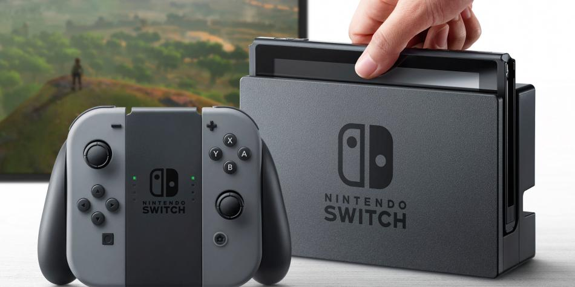
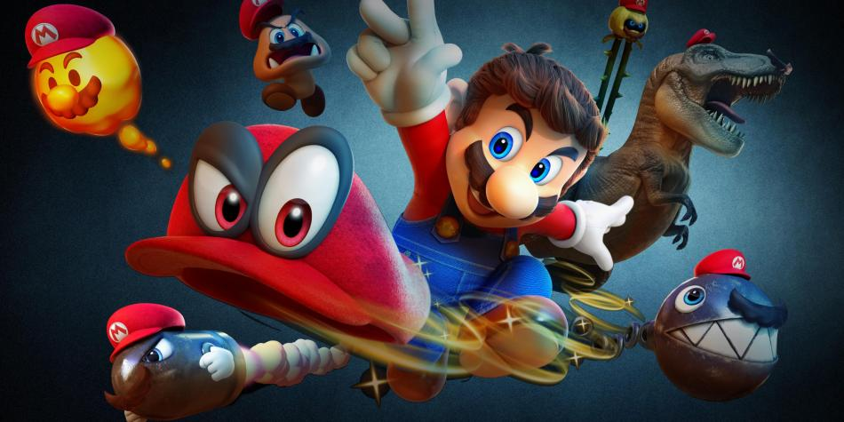
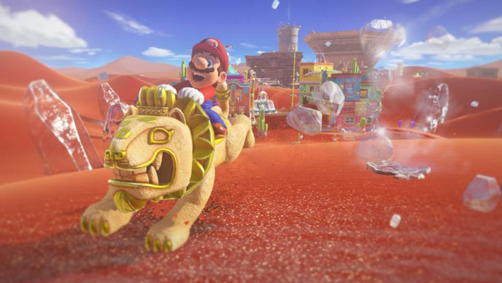
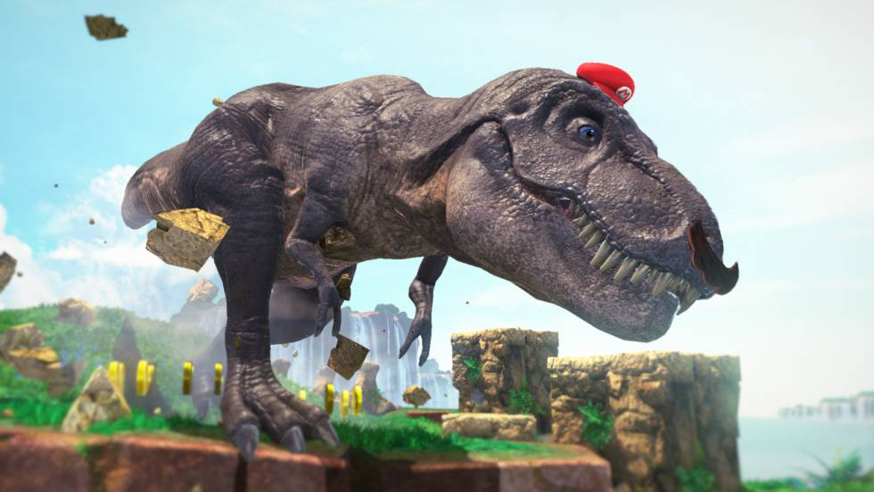

El personaje de Mario surgió del primer juego de Donkey Kong, creación de Shigeru Miyamoto de 1981, que estaba inspirado en el triángulo amoroso de las tiras cómicas y dibujos animados de Popeye, el marino. ... Si el juego de a dos se tornaba aburrido daba la opción de enfrentarse uno a uno a como diera lugar.
La Nintendo Switch llegará al mercado, de forma oficial, a partir de mañana. La última consola de la firma japonesa se puede usar como sistema de sobremesa (al igual que otros productos de la competencia como la Xbox One o la PlayStation 4) o como dispositivo portátil, a semejanza de una tableta. A continuación, resolvemos, con un formato de preguntas y respuestas, las principales dudas sobre la consola.
Un homenaje a los elementos clásicos de un juego legendario y, a la vez, una reinvención que lo trae a una nueva era. Super Mario Odyssey, que fue lanzado este viernes en exclusiva para Nintendo Switch, es una de esas raras creaciones que logra habitar con éxito entre los dos mundos.
El año se ha definido al compás de Nintendo. Al arrancarlo, nos vimos enfrentados a un clarísimo candidato a mejor juego de todos los tiempos, el The Legend of Zelda. Breath of the wild. Ahora, camino de darle puntilla ya a este 2017, otro candidato para el mismo honor, como mínimo con las mismas credenciales que el Zelda, irrumpe para hacer insignificantes a todos los demás extraordinarios juegos que se han ido lanzando en un octubre abrumador.
Mario tira su gorra con un floreo. Como todo en este fontanero bigotudo, es mucho más que una gorra. Se llama Cappie (del inglés cap, gorra) y tiene dos ojos saltones y mucha personalidad. Y además una magia secreta. La magia de invadir cualquier cosa, sea un ente animado o inanimado, vivo o inerte. Así que Mario ha decidido la invasión suprema. Su gorra vuela para invadir al mayor de todos los depredadores. Mario va a ser, en cuestión de instantes, un Tiranosaurio Rex. Con mostacho.
